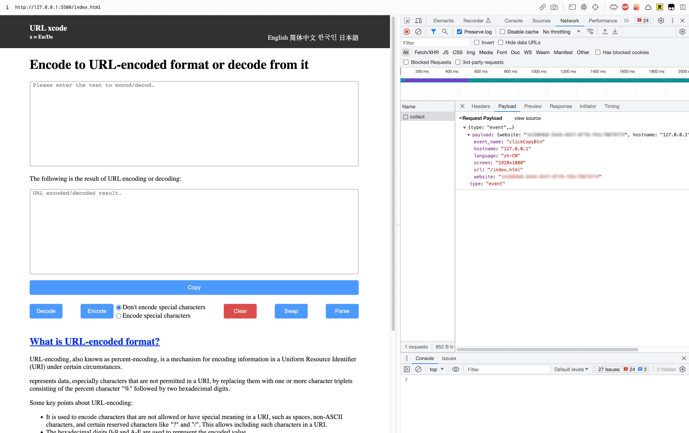

使用 JavaScript 配置 Umami Track Event
当前（2023-08-09）我的 umami 部署版本为 Version 1.40.0，官方已经发布版本为 Version 2.4.1。
Umami Version 1.40 及以上版本支持 Tarck Event，即事件跟踪，简单的说就是可以跟踪用户在网页上面的事件操作，比如点击按钮。
在 官方文档 中提供了两种简单配置方案，根据当前（2023-08-09）文档显示可以通过给按钮添加数据属性或者使用 JavaScript 监听按钮的点击事件然后执行 umami.track() 方法上报事件数据。
调试方法：
按照官方文档提供的方案进行配置后，访问网页，打开 Chrome 开发者工具中的 Network，然后点击已经配置了 Track Event 的按钮，关注是否有新的名为 collect 的请求被发起，如果有，则关注 Request Payload 中传入的参数是否符合预期。
问题：
两种方案在我实践之后均无法成功上报数据，使用 JavaScript 方案时 Chrome 开发者工具 Console 中报错 umami.track is not a function，可能是由于我部署的 umami 版本不支持上述方案，
解决方案：
在不升级我部署的 umami 版本的基础上，我最终发现可以通过 JavaScript 监听按钮的点击事件然后执行 umami() 方法上报事件数据。
比如：
document.getElementById("btn-copy").onclick = () => umami("clickCopyBtn");
除了使用 JavaScript 方案外，umami Version 1.40.0 应该还支持通过给按钮添加 Class 来配置 Track Event，类的命名格式要求为：
umami--<event>--<event-name>
比如：
<button id="btn-copy" class="umami--click--clickCopyBtn">Copy</button>
注：该方法（添加 Class）未经校验。